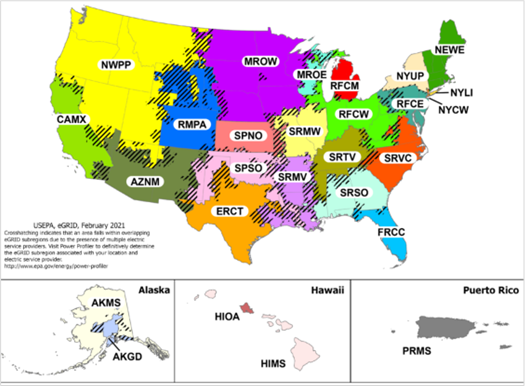

Location-based emissions factors for the United States are published by the EPA, apply to most data sources and are updated on a regular basis. The EPA publish two sets of electricity factors for the United States i.e. for the actual states and for the e-grid regions. Both of these are implemented in the Cority Sustainability solutions.
The Green-e residual mix factors are published by the EPA annually for the United States e-grid regions. From 2015 to 2018 they included factors for the Canadian regions as well.
Each data source in the Sustainability Performance Management solution is assigned to a location for the automatic selection of location-based and residual mix emissions factors. For locations in the United States, both the states and e-grid regions are available.
If a data source is assigned to an e-grid region, the relevant regional location-based and regional residual mix e-grid emissions factors will be used.
If a data source is assigned to a state, the state level location-based emissions factor and the most relevant regional residual mix factor will be used. To ensure the most relevant regional residual mix factor is used, each state has been mapped to the most appropriate e-grid region (source: EPA). For example, all data sources assigned to the state ‘United States – New York’ will use the New York state level location-based emissions factor and the ‘NYUP’ residual mix emissions factor.
EPA mapping of US States to e-grid regions

| States | eGRID Region |
| United States – Alabama | SRSO |
| United States – Alaska | AKMS |
| United States – Arizona | AZNM |
| United States – Arkansas | SRMV |
| United States - California | CAMX |
| United States – Colorado | RMPA |
| United States - Connecticut | NEWE |
| United States - Delaware | RFCE |
| United States – Florida | FRCC |
| United States – Georgia | SRSO |
| United States – Hawaii | HIMS |
| United States – Idaho | NWPP |
| United States – Illinois | SRMW |
| United States – Indiana | RFCW |
| United States – Iowa | MROW |
| United States – Kansas | SPNO |
| United States – Kentucky | SRTV |
| United States – Louisiana | SRMV |
| United States – Maine | NEWE |
| United States - Maryland | RFCE |
| United States - Massachusetts | NEWE |
| United States – Michigan | RFCM |
| United States - Minnesota | MROW |
| United States - Mississippi | SRMV |
| United States – Missouri | SRMW |
| United States – Montana | NWPP |
| United States – Nebraska | MROW |
| United States – Nevada | NWPP |
| United States - New Hampshire | NEWE |
| United States - New Jersey | RFCE |
| United States - New Mexico | AZNM |
| United States - New York | NYUP |
| United States - North Carolina | SRVC |
| United States - North Dakota | MROW |
| United States – Ohio | RFCW |
| United States - Oklahoma | SPSO |
| United States – Oregon | NWPP |
| United States - Pennsylvania | RFCE |
| United States - Rhode Island | NEWE |
| United States - South Carolina | SRVC |
| United States - South Dakota | MROW |
| United States - Tennessee | SRTV |
| United States – Texas | ERCT |
| United States – Utah | NWPP |
| United States – Vermont | NEWE |
| United States – Virginia | SRVC |
| United States - Washington | NWPP |
| United States - West Virginia | RFCW |
| United States - Wisconsin | MROE |
| United States - Wyoming | NWPP |